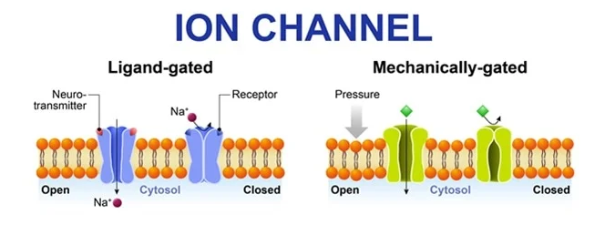
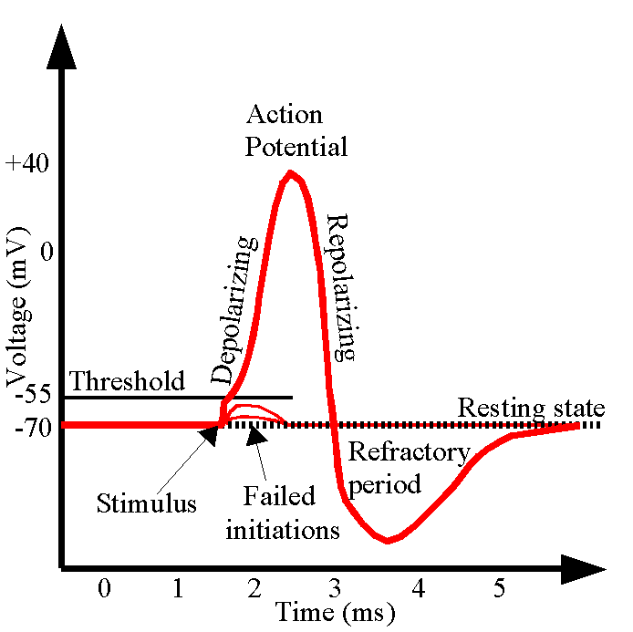
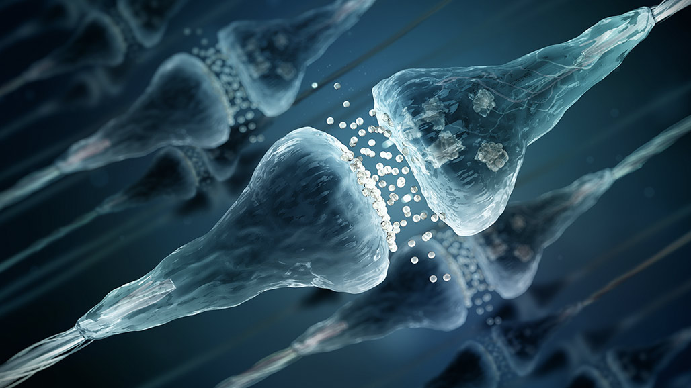
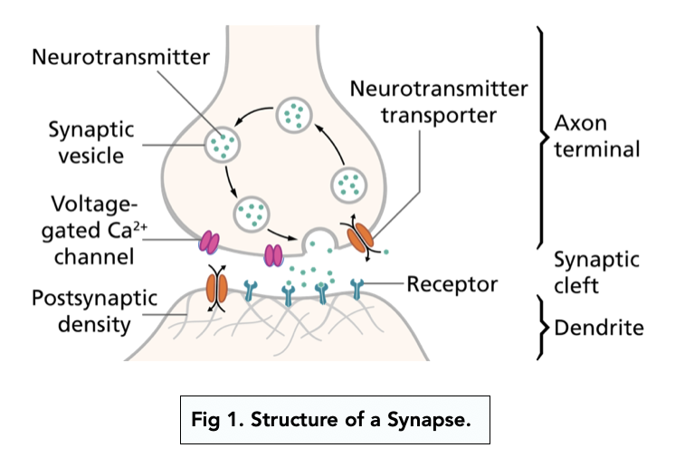

Nerve cells, also known as NEURONS, are the main type of cell found within the nervous system. The brain consists of billions of neurons.
How are neurons assembled to form the nervous system? We can think of the pathway something as follows: sensory input --> nervous system --> motor output
The nervous system is responsible for SENTIENCE - the feeling that the body obeys the mind
In its most common form, a neuron consists of a CELL BODY with many projections leading away from it
Most of these projections are DENDRITES, which collect info from other neurons and bring it to the cell body
AXONS are much longer - they can be up to 1 meter in length - and branch out to make contact with the dendrites of other neurons
We can remember the direction of propagation of an electrical signal reverse-alphabetically, as: d --> cb --> a
In most neurons, the axon is protected by a fatty coating called MYELIN SHEATH. This increases the speed at which impulses can be transmitted along the nerve cell
So to reiterate: a neuron collects inputs from other neurons (via the dendrites), processes them (in the cell body) and gives an output (via the axon) - remember: d --> cb --> a
Neurons are amitotic, meaning they do not divide. This means that neurons are not usually replaced, so we are born and die with mostly the same neurons
Recall that an ion is an atom or molecule with a net electric charge. Examples include sodium and potassium ions: Na+ and K+. Each of these started out as a neutral sodium/potassium atom and lost one electron to become an ion
Also recall that in physics, whenever there is a separation of charges, an electrical potential exists. Put simply, we know that opposite charges attract, so it takes energy to separate them (strictly speaking, we say work must be done to separate the two charges)
A neuron exploits the potential energy that exists by virtue of the separation of ions between the inside and outside of the cell membrane. So if, for example, there exists a greater concentration of potassium ions (K^+) on the inside of the cell membrane, the net difference in electric charge between the inside/outside will give rise to an electrical potential. We say there is a potential difference across the cell membrane - called the resting potential of the neuron (keep this in mind...)
Now, along the cell membrane ION CHANNELS let through specific ions at specific times that would otherwise not be able to traverse the cell membrane
A chemically-gated ion channel opens when a specific neurotransmitter binds to it. A voltage-gated channel responds to a change in the membrane potential. Finally, a mechanically-gated channel opens when the receptor becomes physically deformed

When a signal is received by a neuron, be it from sensory input or a neurotransmitter from another neuron, above a certain threshold, there will be a change in the membrane potential
The change in membrane potential will cause rapid discharge of the potential along the entire length of the neuron - we say the neuron has fired
The signal will propagate along the neuron rapidly, before reaching a SYNAPSE
A synapse is the gap between two neurons (or between a neuron and an effector cell). This is where communication happens (next section)
Finally, everything will reset via repolarisation and hyperpolarisation. After these processes have taken place, the resting potential is eventually restored, and the same neuron is ready to fire again

As mentioned, when an action potential fires, the impulse travels along the axon, to the axon terminals, before coming to the end of the neuron
In order for the neuron to pass an electrical or chemical signal to another neuron (or a target effector cell), the signal must traverse a synapse, which is the gap between the two neurons
So synapses are how neurons talk to each other
There are two types: electrical synapses, and chemical synapses, with the latter being the most common
A chemical synapse works as follows: when the electrical signal reaches the end of one neuron, it causes certain chemicals called NEUROTRANSMITTERS to be released into the gap (called the synaptic cleft) between the neuron and the next neuron it is trying to talk to
The neurotransmitters diffuse across the synaptic cleft and bind to chemically-gated ion channels on the second neuron, causing it to fire
Chemical synapses allow neurons to form circuits within the CNS. They are crucial to the biological computations that underlie perception and thought. They allow the NS to connect to and control other systems of the body (words taken from the Wikipedia page)
In neuroscience, there is a saying: neurons that fire together, wire together!
What this means is that when we fire the same sets of neurons (i.e. activate the same neuronal circuits) over and over again, the connections that exist between them become strengthened. The activity of repeatedly firing the same neurons is called practice - and it is what allows us to become so good at playing musical instruments, solving chess puzzles, and playing sports. The more the neurons fire together, the easier it becomes to do the same activity next time. One analogy is that it is like a grassy path where the more people that walk over it over time, the more pronounced the path becomes (since the grass gets flatter)
